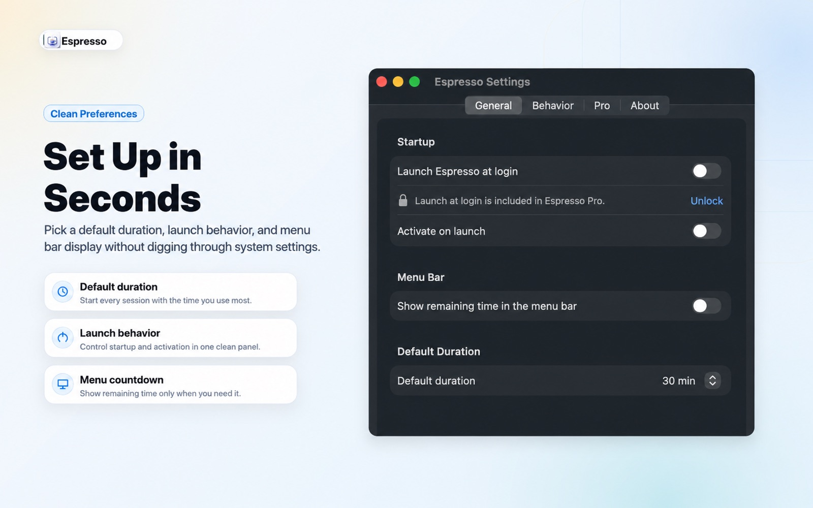
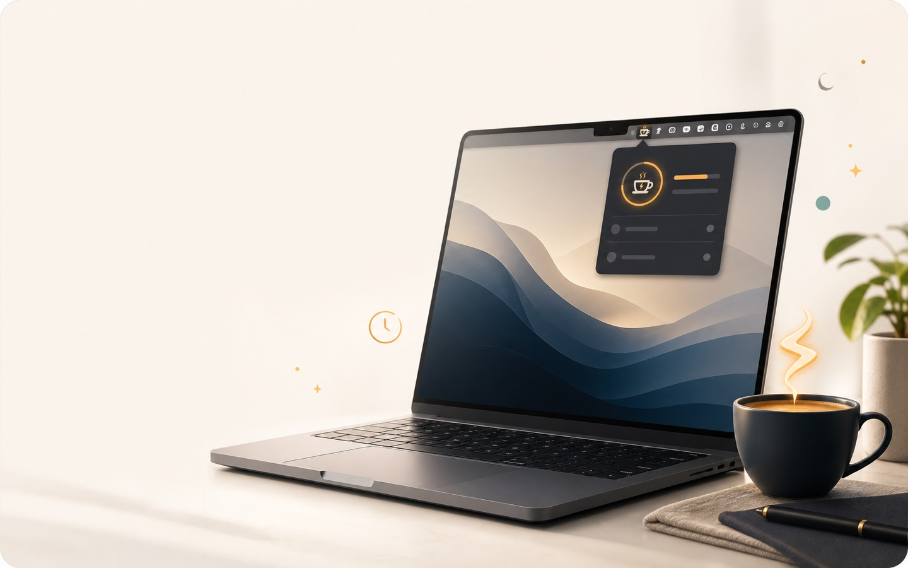
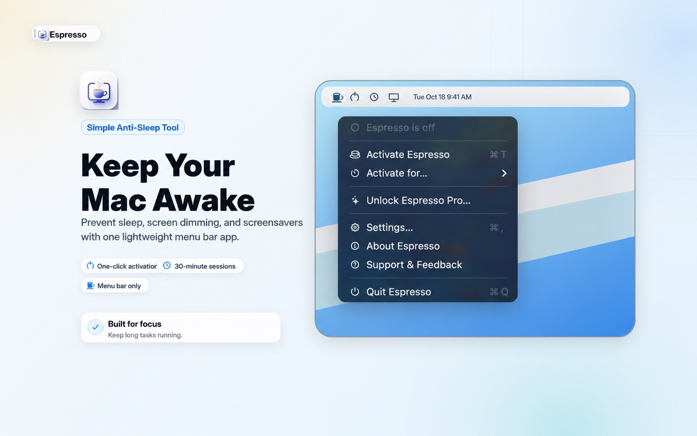
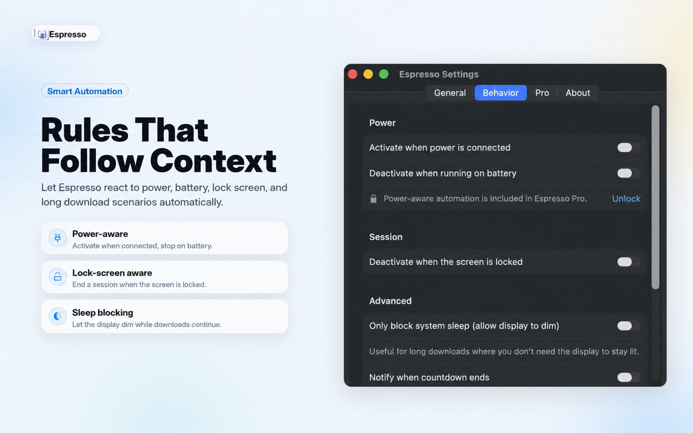
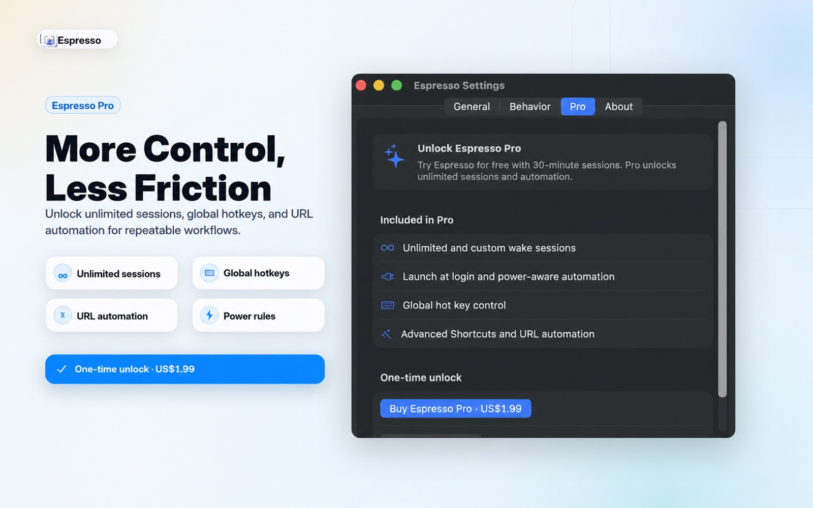

Preferences
Default duration, startup behavior, and menu bar status.
Choose how Espresso behaves before the next long task starts.

macOS menu bar sleep prevention
Espresso keeps your Mac awake during downloads, meetings, builds, uploads, presentations, and remote sessions. Start a session, watch the countdown, and let normal sleep return when it ends.

The workflow
System Settings are too broad for a temporary job. Terminal commands are powerful but easy to forget. Espresso gives you one focused control for the moments when sleep would interrupt real work.

Controls
Espresso stays in the menu bar, but gives you the controls a real keep-awake workflow needs.
Preferences
Choose how Espresso behaves before the next long task starts.

Power aware
Keep wake sessions practical across desk, couch, and travel setups.
Lifetime Unlock
Upgrade once when you want deeper control.

Automation
Start a wake session before a long build, screen share, migration, or upload. Espresso keeps the state visible and lets you go back to work.
Caffeinate alternative
Excellent for scripts and power users. Less obvious when a session is running, and easy to forget when you only need it occasionally.
A native menu bar app with timers, status, preferences, Shortcuts actions, and a clear off switch for everyday Mac workflows.
Privacy
Espresso has no account, no ads, no analytics, no telemetry, and no backend service. Preferences stay local.
FAQ
Only while you choose. You can use a timed session, turn it off manually, or let macOS return to normal sleep behavior when the timer ends.
No. Espresso is intentionally focused on temporary wake sessions. It is not a full power-management suite.
Yes. Espresso has no account system and stores preferences locally on your Mac.
Ready when you need it
Start with free 30-minute sessions. Unlock custom timers, automation, hot keys, and indefinite sessions when you need more control.
Download Espresso